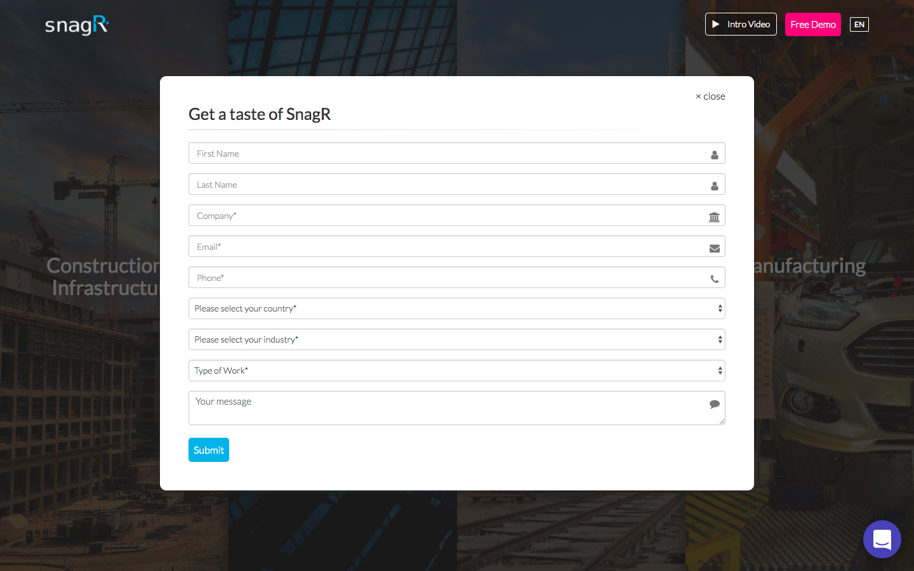

When you google “how to design an effective signup form”, one of the golden rules is to keep it concise. No one wants to spend half an hour to fill in a form.
However, sometimes a long signup form is necessary. For my case, the support team needs certain information to set up the demo project for the new user, while the sales team wants certain personal details to further pitch to the lead. The signup form ends up looking like this :
The consequence is nothing beyond imagination. The conversion rate dropped — users don’t fill in the form, and even when they’re filling in the form, they drop out half way through.
The tool we use to recruit leads becomes the wall that blocks them away.
When the business requirements remain solid i.e. all 8 mandatory fields (except the optional “Your message” text area) are here to stay, how can we redesign it to increase the conversion rate?
1. Shorten the perceived length of the form
By breaking down the form into 3 steps, the user doesn’t see a whole list of 9 intimidating fields at one time. They are shown 2–3 input fields at each stage and that’s very visually acceptable.
2. Value prop in microcopies
Why, they ask, should I give this piece of information to you? What will you do with this information? And in the overwhelming-direct-marketing era, people are especially wary to give out their contact information — Will you spam me? Therefore, we should tell them, before they ask, why we want such information from them for their own benefits. Give them a reason to fill in the form.
3. Remember what the user typed
I still remember the frustration during my online flight check-in process from months ago. I missed a field and clicked submit, the whole page reloaded showing an horrible error message, while all other fields are gone for no reason. That’s probably the one time I cried, why you no cache!? Remember, the longer your form is, the more important the cache is.
4. Indicate progress along the way
People always prefer to have progress indicators. We want to have well-defined goals and accomplish them (Check out this post to see more real-life examples). Even as small as our 3-step signup form here, once the user start filling in the form, the progress bar encourages her to finish all the steps. Commemorate the success to give your user an even better experience.
Wrap up
While this post focuses on the longer form designs, there are many more guides and best practices for designing signup forms in general. Not only does it serves as the first impression of your product to the users, it also affects your revenue directly whether your business is an e-commerce, SaaS or ad-driven. Any amount of design effort can be justified to optimise the signup experience.